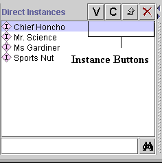

The Instance buttons, 

 , located at the top right of the Direct
Instances pane, allow you to view and edit, create, or delete a instance.
Note that these icons have a similar action wherever they appear; for example,
see the Class Buttons.
, located at the top right of the Direct
Instances pane, allow you to view and edit, create, or delete a instance.
Note that these icons have a similar action wherever they appear; for example,
see the Class Buttons.

The buttons have the following actions:
| |
V(iew) button: Click this button to open the Instances Form for the highlighted class. See Editing an Instance. |
| C(reate) button: Click this button to create a new instance for the class highlighted in the Class Pane at the Instances Tab. See Creating an Instance Directly. | |
| Back-references button: Click this button to view all the objects that reference the highlighted instance. See Viewing Back-References. | |
| Delete button: Click this button to delete the highlighted instance. See Deleting an Instance. |
If the View or Delete button is grayed out, this indicates that the current instance cannot be edited or deleted. Such an instance always has a gray icon to its left. Instances cannot be edited if they are included from another project.
If the Create button is grayed out, no instances can be
created for the class selected in the Class
Pane at the Instances Tab. This is the case if the class is abstract, shown
by an  icon.
icon.
Next: The Instances Form